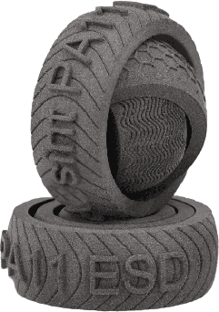

SLS material · TPU 88A
SLS 3D printing in TPU 88A (flexible elastomer)
A flexible thermoplastic elastomer, Shore 88A hardness. It bends, compresses and returns to shape, and SLS allows lattice structures that are impossible otherwise.
SLS · Selective laser sinteringFlexible · Elastic · Shock-absorbing

Quick facts
TPU 88A at a glance
Heat resistanceMedium
HardnessShore 88A
FinishMatte
ElasticityHigh
ProcessSLS, no supports
The material
What is TPU 88A?
TPU (thermoplastic polyurethane) is a flexible, elastic material close to rubber. Its Shore 88A hardness corresponds to a soft but firm material, comparable to a shoe sole.
In SLS, TPU takes on another dimension: without supports, it can print lattice structures that absorb impacts in a controlled way, complex bellows or soft parts with shapes impossible to mould.
It is the material for custom seals, dampers, insoles, grips and guards.
Pros / cons
Strengths & limits
Strengths
- Flexible and elastic, returns to shape
- Resistant to abrasion and tearing
- Shock-absorbing lattice structures
- No supports, complex shapes
- Flexible parts without a mould
Limits
- Less accurate than a rigid material on small details
- Average heat resistance
- Slightly grainy matte surface
Uses
TPU 88A applications
Sector
Comfort & sport
Insoles, padding, guards, grips.
Sector
Industry
Seals, bellows, stops, dampers.
Sector
Products
Soft handles, cases, bumpers.
Sector
Prototypes
Flexible parts before silicone moulding or injection.
Specifications
Technical data
| Family | Thermoplastic polyurethane (TPU) |
|---|---|
| Hardness | Shore 88A |
| Behaviour | Elastic |
| Process | Selective laser sintering |
Indicative values (manufacturer data or typical values for the material family). * To be validated for the final application. Full datasheets on request.
Workshop tips
Designing your part in TPU 88A
Design tips
- Use lattices to tune flexibility without changing material.
- Walls of at least 1 mm for good strength.
- Add vents to remove powder from hollow structures.
Finishes & post-processing
- Bead blasting
- Black dyeing


Compare
TPU 88A or something else?
FAQ
TPU 88A: frequently asked questions
What does Shore 88A mean?
It is a hardness measurement for soft materials. 88A corresponds to a soft but firm material, close to a shoe sole.
Why print TPU in SLS rather than FDM?
SLS allows complex shapes and lattices without supports, impossible to produce cleanly in FDM with a flexible material.
Other SLS materials

Nylon PA12 grey
Versatile · Strong · Economical
View the sheet →
Nylon PA12 production
Repeatable · Industrial · Series
View the sheet →
Rilsan PA11
Versatile · Strong · Flexible
View the sheet →
PA11
Bio-based · Flexible · Biocompatible
View the sheet →
PA11 CF
Rigid · Lightweight · Structural
View the sheet →
PA11 ESD
Antistatic · Protective · Electronics
View the sheet →
Glass-filled PA12
Rigid · Stable · Thermal
View the sheet →
PA2210 FR
Flame-retardant · Certified · Aerospace
View the sheet →People also find us for
SLS TPU 3D printingFlexible 3D-printed part BelgiumShock-absorbing 3D-printed latticeCustom 3D-printed seal
Detailed descriptionEverything to know: click to expand
USE CASES: WHAT FOR?
- Flexible seals
- Technical insoles
- Guards / cases
- Shock absorbers
- Functional flexible parts
Compatible machines at O&D
Supermaker SLS 3540 PRO
TPU 88A is a soft, flexible, strong industrial elastomer.
TPU 88A (thermoplastic polyurethane) is a flexible material used in additive manufacturing, notably FDM 3D printing and sometimes SLS depending on the variant. With a Shore hardness of 88A, it sits in an intermediate range of flexibility, offering a good compromise between elasticity and mechanical strength.
This material can withstand significant deformation while returning to its original shape, making it particularly suited to parts subject to repeated bending or impacts. It also has good resistance to abrasion, oils and certain chemicals. TPU 88A is widely used to manufacture functional parts requiring comfort, shock absorption or some structural flexibility, while remaining durable over time.
Next step
A part to make?
Send your 3D file or describe what you need: instant quote with a file, custom quote within 24 h.